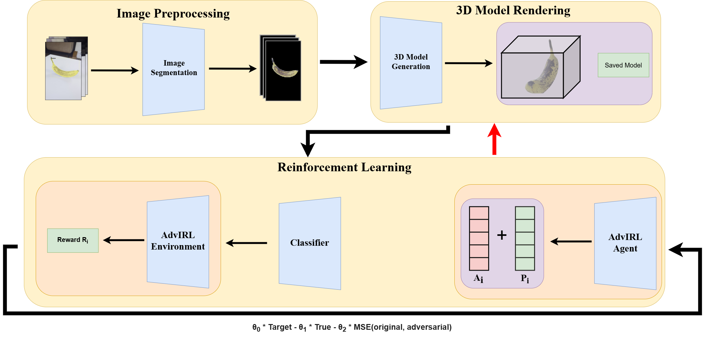

AdvIRL: Reinforcement Learning-Based Adversarial Attacks on 3D NeRF Models

Abstract
The increasing deployment of AI models in critical applications has exposed them to significant risks from adversarial attacks. While adversarial vulnerabilities in 2D vision models have been extensively studied, the threat landscape for 3D generative models, such as Neural Radiance Fields (NeRF), remains underexplored. This work introduces AdvIRL, a novel framework for crafting adversarial NeRF models using Instant Neural Graphics Primitives (Instant-NGP) and Reinforcement Learning. Unlike prior methods, AdvIRL generates adversarial noise that remains robust under diverse 3D transformations, including rotations and scaling, enabling effective black-box attacks in real-world scenarios. Our approach is validated across a wide range of scenes, from small objects (e.g., bananas) to large environments (e.g., lighthouses). Notably, targeted attacks achieved high-confidence misclassifications, such as labeling a banana as a slug and a truck as a cannon, demonstrating the practical risks posed by adversarial NeRFs. Beyond attacking, AdvIRL-generated adversarial models can serve as adversarial training data to enhance the robustness of vision systems. The implementation of AdvIRL is publicly available at https://github.com/Tommy-Nguyen-cpu/AdvIRL/tree/MultiView-Clean?tab=readme-ov-file, ensuring reproducibility and facilitating future research.
Diagrams & Figures
Our pipeline comprises three key algorithms: an image segmentation algorithm, the Neural Radiance Field (NeRF) algorithm, and a reinforcement learning algorithm. The image segmentation algorithm occurs before the reinforcement learning algorithm, executing once to generate background-free images, as illustrated in the figure below.

A detailed diagram of our reinforcement learning pipeline is shown in the figure below.
.png)
Results
Truck Scene
Banana Scene
Lighthouse Scene
Our reinforcement learning algorithm demonstrates outstanding performance, generating adversarial noise that remains robust across a range of angles and distances. Across all three scene types, the algorithm consistently produces noise targeted at specific classes, resulting in the majority of observed images being misclassified as the adversarial class. It's noteworthy that while the algorithm typically generates adversarial noise specifically for the object, there are instances where applying noise beyond the object leads to higher confidences in the target class. This is exemplified by the scene featuring the lighthouse with adversarial noise.
Agent Learning To Generate Noise For Christmas Tree Class
Citation
@misc{nguyen2024advirlreinforcementlearningbasedadversarial,
title={AdvIRL: Reinforcement Learning-Based Adversarial Attacks on 3D NeRF Models},
author={Tommy Nguyen and Mehmet Ergezer and Christian Green},
year={2024},
eprint={2412.16213},
archivePrefix={arXiv},
primaryClass={cs.CV},
url={https://arxiv.org/abs/2412.16213},
}
Acknowledgements
We would like to thank Dr. Micah Schuster and Dr. Antonio Furgiuele for reviewing our paper and providing feedback on our work. We also thank Joey Litalien for the framework for our AdvIRL website.
Truck & Lighthouse Scene ©Arno Knapitsch and Jaesik Park and Qian-Yi Zhou and Vladlen Koltun (CC BY 4.0)